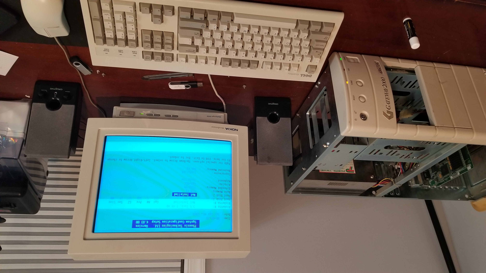

This Log is dedicated to restoring a Gateway 2000 computer I recieved a while back. Specifically, it is a Gateway 2000 486/33C, one of their older desktop towers from the early 1990s. As such, it is a medium-range system with a 33mhz 486 and 8MB of Ram, with an additional expansion for more memory (But sadly no VLB slos). As such, the computer is moreso based off of the early 386 boards rather than the more advanced 486 boards, sporting no peripheral controllers, with 8 16-bit ISA slots allowing for hardware expansions. The computer came with a decent ISA Graphics Card and a controller card, however my version also has a modem card installed. I will be using an old ATI Graphics Mach8 and an acer controller card for this machine.

Sadly, the Motherboard itself has a barrel battery, and as such has leaked near the keyboard encoder and some resistors. After cutting the battery of the board, I decided to power the system on - and surprisingly, it worked. Despite a keyboard failiure, the computer booted into the bios just fine, although I can't say that the BIOS is particularly useful. As mentioned earlier, some of the corrosion went onto the keyboard encoder but this can be fixed with some cleaning.
My next step would be to clean the board up, remove the corrosion near the barrel battery, and then find an alternative to the battery. Much like any modern motherboard, the battery exists to hold BIOS information when the computer is turned off. Motherboards having CR2023 batteries was only common with computers made in the late 90s, and many alternatives included strange microcontrollers like the Dallas RTC among others. A good substitute would be a CR2023 holder, but this would need to be soldered onto the board with an additional diode to prevent the board from recharging the battery - some of these boards recharged the barrel batteries when turned on so they could survive the next powerdown.
Besides this, my futue plans are to get the controller card working, and install MS-DOS 6.22 on an IDE-based CF-Card. I wanted to use this computer for more general purpose MS-DOS games, so I have decided on also installing a soundblaster 2 pro clone (The ESS 1688). Of course, an ATI Mach8 paired with a 486 DX33 is not enough for a playable experience with DOOM, so I will probably not bother with any later DOS games like Quake or Descent. My final plan would be to find a compatible memory expansion and hopefully use it to install more than 8MB, and possibly install Windows 3.1. For floppy drives, I will be using a floppy USB-Emulator despite having a working floppy drive, as I do not have many floppies lying around. I will also be installing a CD-ROM drive. Ultimately, this will probably shape up to be the peak 486 computer of 1992.